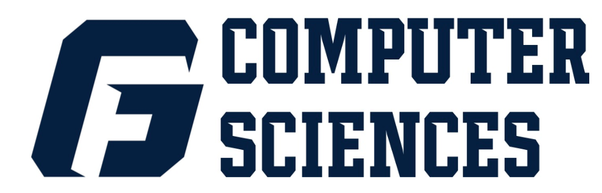

George Fox University | 2018 - 2020
Getting to work with underclassmen as they begin to grasp the fundamentals of computational thinking has really helped to solidify the ins and outs of those concepts for myself as well.
Working one-on-one with students has also improved my ability to clearly communicate my ideas and thought processes even if they take time to be fully understood.
In addition to working with students in the lab, I have also working with professors to streamline their grading process. This takes the form of writing and tayloring
scripts to handle and process student input for the professors to grade. These scripts are typically either written in python or bash.
Experience & Projects
My experiences have shaped my perspective and challenged me beyond what I thought I was capable of. Below are details of some of my favorite projects from my time in college and internships that have taught me the most.

CSIS Lab Assistant
Full Stack Engineering Intern
BCG Digital Ventures | 2019
At DV, I got the chance to work on an internal project that helped staffing and finance teams track billing and time allocation for all international ventures. One feature set I had the opportunity to work closely with was a series of reporting displays for the product’s admin panel. Another area of the product that I worked on was collecting and presenting launch analytics by integrating Mixpanel metrics into the codebase. The tech stack that I got the opportunity to work with was an entirely Node.js environment which was great to get experience with. I had never worked with Node.js and it was an exciting challenge to not only work with but master a language on the job.
At DV, I got the chance to work on an internal project that helped staffing and finance teams track billing and time allocation for all international ventures. One feature set I had the opportunity to work closely with was a series of reporting displays for the product’s admin panel. Another area of the product that I worked on was collecting and presenting launch analytics by integrating Mixpanel metrics into the codebase. The tech stack that I got the opportunity to work with was an entirely Node.js environment which was great to get experience with. I had never worked with Node.js and it was an exciting challenge to not only work with but master a language on the job.
Machine Learning Augmented Attention Model
George Fox University | 2019 - 2020
For my senior year project, I was tasked to work with a team of my peers to develop a system for a local lumber company called Hampton Lumber. The goal for the project was to provide a means for augmented attention to aid human operators in identifying possible unsafe conditions.
Much of the time spent in the beginning was used for determining our rules for data annotation as well as actually labeling the data. The actually scripts for our model are written in Python and harness python libraries like sk-video in order to parse out events in the video stream and extract the necessary information.
For my senior year project, I was tasked to work with a team of my peers to develop a system for a local lumber company called Hampton Lumber. The goal for the project was to provide a means for augmented attention to aid human operators in identifying possible unsafe conditions.
Much of the time spent in the beginning was used for determining our rules for data annotation as well as actually labeling the data. The actually scripts for our model are written in Python and harness python libraries like sk-video in order to parse out events in the video stream and extract the necessary information.

Software QA Intern
Integrated Digital Solutions | 2018
It was a pleasure to be able to return to IDS for a second summer and work through a transitional period for the same project I had worked on the previous summer. In this role, I worked on strengthening the client's understanding of products as well as the relationship with DirecTV by acting as long term support. I was also able to establish a standardized set of technical documents detailing the initialization process and troubleshooting practices for the AT&T DFW Automated Deployment team.
It was a pleasure to be able to return to IDS for a second summer and work through a transitional period for the same project I had worked on the previous summer. In this role, I worked on strengthening the client's understanding of products as well as the relationship with DirecTV by acting as long term support. I was also able to establish a standardized set of technical documents detailing the initialization process and troubleshooting practices for the AT&T DFW Automated Deployment team.
Tech Connect Web Application
George Fox University | 2018 - 2019
During my junior year Servant Engineering course, I got the opportunity to work with a non profit called Mission Aviation Fellowship on a new project they were working on. The goal of the project was to create a web application that matched technical professionals looking to donate their skills to missions projects that were in need of those specific skill sets. The tech stack included the a React frontend generated by Gatsby on top of the CMS Strapi. We also spent a good deal of time integrating other products into our application to make it more robust and secure. As my first full stack project, it was an interesting new challenge to work with this tech stack and ultimately it taught me a lot.
During my junior year Servant Engineering course, I got the opportunity to work with a non profit called Mission Aviation Fellowship on a new project they were working on. The goal of the project was to create a web application that matched technical professionals looking to donate their skills to missions projects that were in need of those specific skill sets. The tech stack included the a React frontend generated by Gatsby on top of the CMS Strapi. We also spent a good deal of time integrating other products into our application to make it more robust and secure. As my first full stack project, it was an interesting new challenge to work with this tech stack and ultimately it taught me a lot.
QA Intern
Integrated Digital Solutions | 2017
My first internship experience was something I'll never forget considering it was so early in my career and I had so much to learn. I spent much of my time optimizing applications used to test DirecTV products by increasing their compatibility with various file formats. I also utilized Agile Scrum practices including the use of JIRA in multiple office settings including client companies. This was also my first experince using a Linux environment for development and testing.
My first internship experience was something I'll never forget considering it was so early in my career and I had so much to learn. I spent much of my time optimizing applications used to test DirecTV products by increasing their compatibility with various file formats. I also utilized Agile Scrum practices including the use of JIRA in multiple office settings including client companies. This was also my first experince using a Linux environment for development and testing.